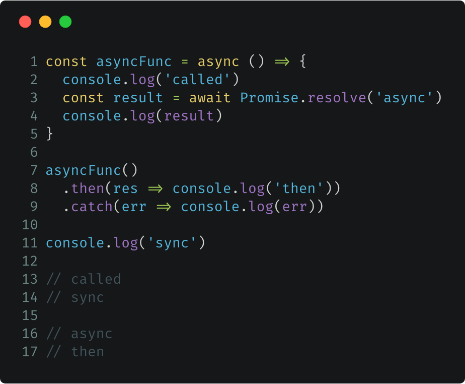

每天一点ES6(17)：Async / Await

又一个异步解决方案
ES2015 在异步方面可谓是做足了贡献。之前我们已经介绍过了 Promise，一种可以让我们把异步操作写成链式调用的语法；就在上一篇，我们又介绍了 Generator，一种可以把异步操作同步化的语法。所以这个“异步/等待”又是什么新玩法？
只是个语法糖
时至今日，大家对async/await应该已经很听说过很多次了，算是 ES2015 以来被知道最多的特性之一。即便日常工作中没有用到，也都有所耳闻。
和 Generator 一样，async/await也是一种可以把异步操作同步化的语法。确切的说，它并不是什么全新的东西，不过是 Generator 的语法糖：
- 把*替换成async
- 把yield替换成await
结束。
不只是个语法糖
当然，能够单独作为一篇出来讲的，肯定不会只是语法糖这么简单，虽然语法看上去就这么简单。
我们知道，执行 Generator 函数的结果是得到一个遍历器实例，需要手动调用next()才能执行。async 函数内置了执行器，调用 async 函数就和调用普通函数一样，没有区别。
从语义上讲，相比*和yield，async/await更加的直观，async表示函数里有异步操作，但是，函数本身是同步的。await表示等待右边紧跟的操作完成，再进入后续的流程，最终得到一个同步的执行流程。
async 函数返回一个 Promise 对象，可以直接用then()指定下一步的操作，相比 Generator 返回一个 Iterator 对象更方便。
换个角度，async 函数也可以看作是把多个异步操作包装成一个 Promise，await就相当于内部的then()，用于控制异步操作同步执行。和 Promise.all()也很类似，只不过内部的多个异步流程是按顺序执行的。
不，async 不一定是异步的
虽然 async 这个词本身表示异步（asynchronous的缩写），但 async 函数本身并不是异步的。是的，你没有看错，这个顶着异步名号的家伙，其实是个同步函数，真正的“异步”在它的肚子里。如果 async 函数的函数体里执行的全都是同步操作，那么它就和普通的函数没什么区别，只有当其中执行到异步的操作的时候，配合 await 才会发挥出真正的威力。
所以，要怎么用呢？
少废话，看东西。
- 在函数定义的最前面添加async表示这是个 async 函数。
- awiat只能在async函数内部使用。
- async 函数本身是同步的，所以 "called" 会先打出来；直到遇到第一个await，函数先返回，后面的流程全都视为异步。所以 "async" 会在 "sync" 之后打出。
- await后面通常接一个异步操作，待执行完成后返回结果，再往下执行。当然await后面也可以接一些原始类型，此时这就相当于是一个同步操作。但这并不影响 async 函数会在这之前先返回。
- async 函数的调用和普通函数一样。
- async 函数总是返回一个 Promise，如果函数内return语句返回的不是 Promise，则会被包装秤一个立即 resolve 的 Promise对象。
- async 函数在遇到第一个awiat时会先返回一次，交还程序的控制权给到父级，函数内的后续流程会继续异步执行，直到完成或出错，才正式返回一个 Promise。
async 函数的错误处理
async 函数的错误处理机制其实和 Promise 差不多，只不过一些细节上需要留意一下。
async 函数里如果出现有 Promise 被 reject 的情况，无论代码中是否有return，函数会立即返回一个被 reject 的 Promise，后续代码不会执行。如果希望异步操作出错不影响后续的逻辑，可以把异步操作嵌套在try...catch里，如果异步操作本身就是 Promise，也可以用 Promise 的catch()来处理。
实现一个自动执行器
我们已经知道 async 就是一个 Generator 加上自动执行器，Generator 我们已经知道了，自动执行又是怎么做到的呢？要解释清楚这个问题，还得看代码。

小结
一句话概括：async 函数 === 自动执行器(Generator)。
这个系列名为 ES6，也就是 ES2015，但 async/await 真正加入标准是在 ES2017，晚了 2 年。不过因为是语法糖的关系，主流环境早在这之前就已经给出了 Polyfill，Node.js 从 7.x 开始也已经正式支持了async/await，所以日常可以放心大胆直接用了。